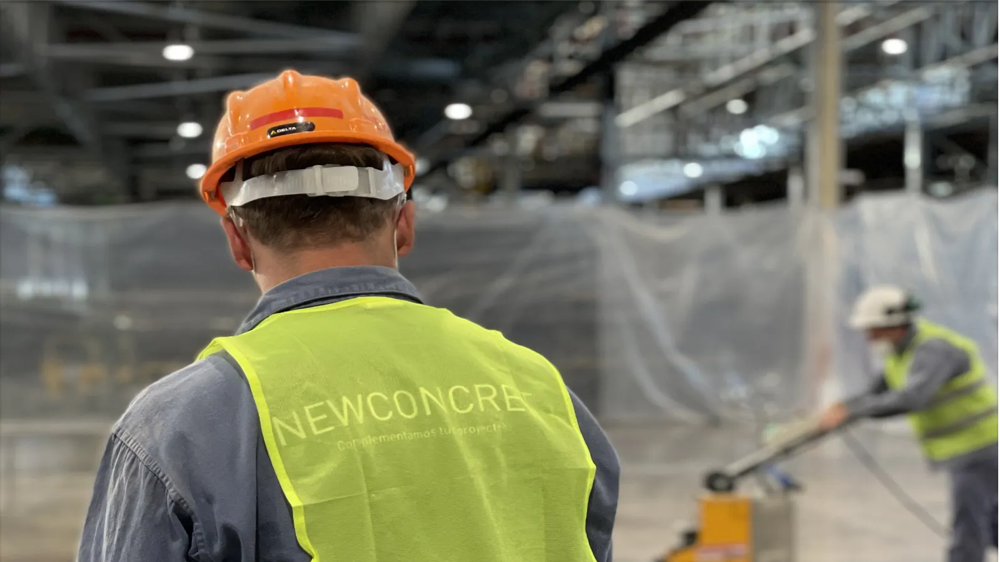

Transformaciones
Antes y después.

Antes

Después

Antes

Después

Maquinaria, insumos, químicos y conocimiento. Cada elemento aporta el 25% del resultado: si falta uno, el sistema queda incompleto. NewConcret integra los cuatro y por eso puede participar en todos los procesos del piso.
Un piso no se resuelve con una máquina, ni con un químico, ni con un consumible suelto. Se resuelve cuando los cuatro elementos trabajan juntos — y cuando hay criterio para combinarlos.
Construcción, reparación, pulido y mantenimiento: en cada etapa del proceso intervienen los cuatro elementos del sistema. Por eso NewConcret puede acompañar el ciclo de vida completo del piso sin depender de terceros.
Gracias a los cuatro elementos, NewConcret participa en las cuatro etapas del ciclo de vida del piso — desde el hormigón fresco hasta el mantenimiento diario.
Tratamiento mecánico con herramientas diamantadas sobre hormigón nuevo o existente. Se logra nivelación, dureza y cierre de poros sin demoler ni recubrir.
Contactanos y te asesoramos sin costo. Respuesta inmediata.